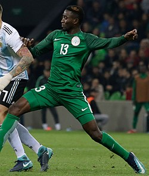

| Nombre | Posición | Edad | Bibliografía | Portada |
|---|---|---|---|---|
| Jay-Jay Okocha | Mediapunta | 51 |
Considerado uno de los mejores futbolistas africanos de todos los tiempos. Destacó por su técnica, regate y creatividad en el mediocampo. |
|
| Nwankwo Kanu | Delantero | 49 |
Campeón de la Champions League con el Ajax y referente de la selección nigeriana. Reconocido por su elegancia y visión de juego. |
|
| Taribo West | Defensa central | 50 |
Defensor recordado por su fortaleza física y sus icónicos peinados. Jugó en clubes como Inter de Milán y AC Milan. |
|
| Joseph Yobo | Defensa central | 44 |
Capitán histórico de Nigeria, con más de 100 partidos internacionales. Brilló en la Premier League con el Everton. |
|
| Vincent Enyeama | Portero | 43 |
Portero emblemático, considerado uno de los mejores de África. Jugó en Francia con Lille y fue líder de la selección. |
|
| Mikel John Obi | Mediocentro | 38 |
Campeón de Champions con Chelsea, se destacó como mediocampista defensivo de gran capacidad táctica y experiencia. |
|
| Yakubu Aiyegbeni | Delantero | 42 |
Goleador nato, con paso por Portsmouth y Everton en la Premier League. Es uno de los máximos artilleros de Nigeria. |
|
| Obafemi Martins | Delantero | 40 |
Reconocido por su velocidad y potencia, jugó en clubes como Inter de Milán, Newcastle y el fútbol estadounidense. |
|
| Emmanuel Emenike | Delantero | 38 |
Figura en la Copa Africana de 2013, fue clave en el título de Nigeria. Jugó en el Fenerbahçe y clubes de Europa y Medio Oriente. |
|
| Ahmed Musa | Extremo | 33 |
Capitán de Nigeria y goleador en Copas del Mundo. Su velocidad lo convirtió en un referente del ataque de las Súper Águilas. |
|
| Victor Moses | Extremo | 34 |
Jugador clave en el Chelsea de Antonio Conte, campeón de Premier League. Fue importante en el título africano de 2013. |
|
| Wilfred Ndidi | Mediocentro defensivo | 28 |
Futbolista del Leicester City, especialista en recuperación y equilibrio del mediocampo. Representa la nueva generación nigeriana. |
 |